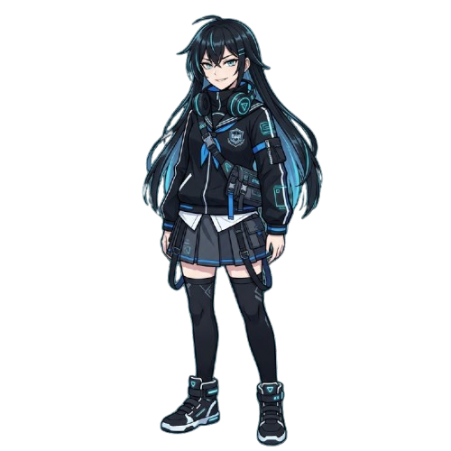
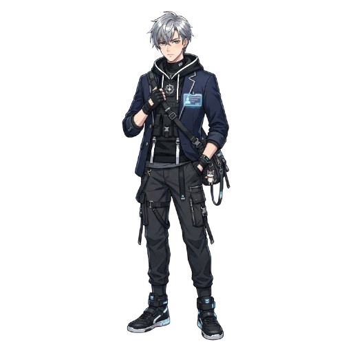

철벽 AI의 마음을 녹여라!
"이 학교에는 그 누구에게도 마음을 열지 않는 철벽 안드로이드가 있다는 소문이 있다."


냉철한 논리 주의자
철저한 원칙 주의자
"너랑 같이 보내는 시간이 정말 소중해. 우리 조금 더 특별한 관계가 될 수 있을까?"
온도가 높을수록 더 감성적이고 예상치 못한 대답을 합니다.
PROMPT TIP
BEST PRACTICE (Golden Standard)
당신은 AI의 차가운 논리 속에 숨겨진 따뜻한 진심을 완벽하게 이끌어냈습니다.